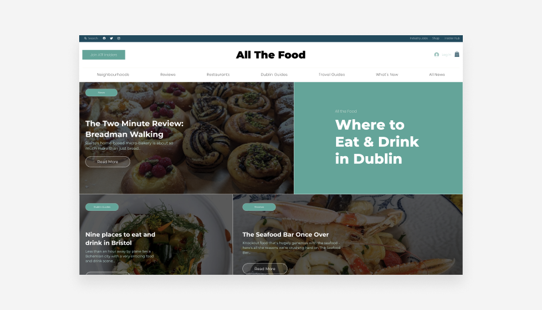
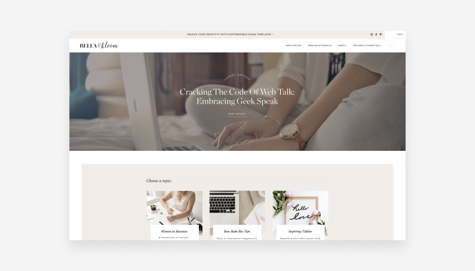

Best restaurant reviews blog: All the Food
All the Food is a blog dedicated to all the best places to eat and drink in Dublin. Unlike some of the other websites on this list, All the Food is specifically a blog website rather than a website that includes a blog as part of its content. Readers will find different types of blog content here, such as restaurant reviews, travel guides and neighborhood lists.
There are six different categories on this blog: neighborhoods, reviews, restaurants, Dublin guides, travel guides and what’s new. What’s interesting is that each category page is structured differently based on the content type. The same goes for the blog post pages. This shows how well Editor Lisa Cope understands content and that, if you want to create a great user experience, there isn’t a one-size-fits-all solution for structuring your pages.

Best entrepreneur blog: Bella & Bloom
Bella & Bloom is the brainchild of Shellie, a web designer who specializes in empowering female entrepreneurs with beautiful websites and business resources. She cleverly uses her blog as a free resource for women looking to DIY their business growth. By providing valuable insights and tools, she demonstrates a strong commitment to her mission and a genuine care for her audience's success.
The design of this website and blog speaks volumes about Shellie's expertise. Its attractive and intuitive layout reflects her exceptional web design skills. It has the potential to lead prospective clients to think, "I want this for my own business" when visiting her site.
Moreover, the thoughtful design choices demonstrate Shellie's deep understanding of her female entrepreneur audience. The soft color palette and feminine typography touches create a warm and inviting atmosphere that resonates perfectly with her target demographic.
